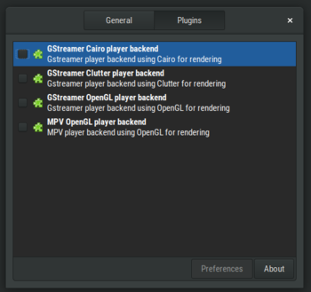

GNOME Twitch
GNOME Twitch
GNOME Twitch 0.3.0 released
So finally after 4 months of hard work (and many delays), the next major version of GNOME Twitch is available! Many new features have been added as well as a lot of groundwork has been laid for future devlopment.
Revamped player
A new system has been introduced using plugins as a way to load different player backends, so 4 different ones are now available. The new default player uses GStreamer and Cairo which removes any dependencies on Clutter. Of course if you liked the Clutter player then it is still available as one of the backends. Additionally a GStreamer + OpenGL backend has been added, should the Cairo one not be adequate. Finally due to popular demand, an experimental MPV backend also using OpenGL has been added.
The first time you open a stream, you will be asked to load a player backend. Hopefully you have one installed and all packages should at least by default install the Cairo + GStreamer one. If you want to use one of the other backends then some distros, like Arch, will soon have packages available to install. Otherwise you'll have to install them manually but this is super simple and instructions can be found in the wiki .
Follows are now synced
You might have already noticed in v0.2.1, but GNOME Twitch will now sync your follows if you are logged in. After logging in through the app menu, if you have any local follows, GNOME Twitch will prompt you if you would like move them up to Twitch. After that any following/unfollowing that you do, will be kept in sync with Twitch.
New chat features
Chat has been improved as well with new features and stability fixes. When the chat is docked you can now drag to resize and when it is undocked you use the controls in the menu to resize it and move it around. Links are now clickable and will open your default browser when clicked. A new emote popup has been added that will insert your favourite emotes easily into the text box. A noticeable fix is that the 'locking' behaviour has been changed, so now it's less likely for the chat to randomly lock/unlock. Also a max scrollback of 1000 lines has been implemented, for better performance, this will later be changeable.
UI improvements
A bunch of UI tweaks and improvements have also been introduced. Just to name a few:
- Player can now be muted by right clicking on the volume button
- Fullscreen bar is now animated when shown/hidden
- All views now show some useful info when empty
All this plus a whole lot of work under the hood. I'll be updating with v0.3.1 soonish with any bug fixes and extra translations. I hope you enjoy the new release and look forward to v0.4.0!